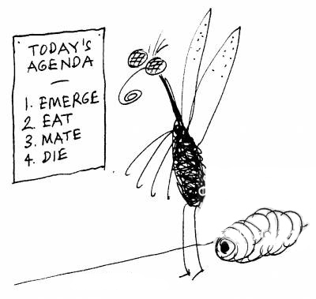

"In any field, find the strangest thing and then explore it."
-John Archibald Wheeler
|
One of the important problems in neuroscience is that we don't really know what is the true data structure that the brain utilizes.The encoding mechanism of the brain through which sensory input is mapped to neuronal network remains a mystery to the date. The brain needs to create structured memory modules in order to utilize the sensory information efficiently and produce an appropriate response in return. Deep learning architectures, inspired by biological neural processes, implement algorithms that train the network to categorize the data based on labelled/defined features. However deep-learning paradigm, so far, do not implement structured sets of active neurons. Through the implementation of optimization funtion, artificial neural network learns an approximate function that minimizes/maximizes the cost given the data. This optimization function, in essence, is the constraint that structures the neural connectivity. I am interested in bringing together concepts from Neuroscience, genetics and dynamical systems and implement them in deep-learning models in order to get insight into the organization of neural connectivity. We do not yet know which is the optimization function our brain implements; but I hope that through the framework of embodied autonomous neural systems (see below), we could get one step closer to understanding encoding and decoding mechanisms of the brain. |
||||||||
|

In order to analyse how information is stored and retrieved in a neuronal network, we need to first construct artificial neural network based agents that receives some input and produces output which is based on its neural connectivity. That is, we need to simulate Breitenberg vehicles embedded in an environment. Such agents are governed by brain-inspired algorithms for self-organization. I am interested in figuring out how to bring about a consistent integration of top-down contextuality (agent-environment interaction) and bottom-up organizing principles (how an agent dynamically organizes itself in order to meet the challenges introduced by a dynamic environment) for such autonomous agents. I am also interested in evolutionary studies on population of such autonomous agents. |
||||||||
|
I spend a lot of time thinking about the gravitational interaction and nature of spacetime. During my masters thesis I tried to understand the notion of emergent phenomena in Physics. Since gravitational field equations have same conceptual status as equations of fluid mechanics, how much can we learn about nature of gravitational interaction if it is an emergent phenomena like fluid mechanics? What is the essential role of quantum mechanics in explaining gravitational interaction? Is the world fundamentally quantum mechanical? Is gravity, same as hydrodynamics, manifestly classical? If so, such a quantum theory of gravity is very different from theory of quantized gravity. Is theory of quantized gravity similar to phonon-physics? As phonons won't provide any information about fundamental structure of atoms, would theory of quantized gravity not provide us any information regarding fundamental structure of spacetime? These are few of the questions that keep me up at night. I think, in order to find a complete theory of quantum gravity, we need to pay attention to three main theoretical constructs, viz.,
|